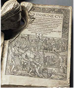

Papalar İçin Zor Günler Başlıyor
1204’te Konstantinopolis Kütüphanesi’nden yağmalanan Antik Yunan ve Roma elyazmalarının Batılı bilginlere ulaşması kolay olmadı. Unutulan bilgileri anlayacak, değerlendirecek ve üstüne yeni bilgiler örecek ehil ellere geçmesi, iki yüzyıla yayıldı.
Avrupa’da henüz matbaa icat edilmemişti, çünkü. Okuma yazma öğrenimi hâlâ ruhban sınıfının ulaşabildiği bir ayrıcalıktı ve elle çoğaltarak kitap üretimi de zaten ruhban yazmanlar (kopistler) tarafından yapılıyordu.
Dolayısıyla, başta filozoflar, Antik Yunan bilginlerinin eserlerine ilk ulaşanlar, yine rahipler ve papazlar oldu. Zamanın bilginleri de zaten onların arasından çıkıyordu. Başka bir deyişle ruhban sınıfında, teolojik bilgilerin dışında, pozitif bilimlere de ilgi duyan ve uzmanlaşan kişiler vardı. Örneğin Umberto Eco’nun Gülün Adı romanındaki Fransisken papaz Guillaume de Baskerville, engizisyon karanlığına karşı mücadele ve Kilise’de reform istemini temsil eden “aydın din adamı” karakteridir.
Öyküsünü anlatacağım Marsilio da Padova, işte böyle biri, İtalya’nın Padova kentinde felsefe ve tıp okuduktan ve Fransa’nın Orleans ve Paris üniversitelerinde tıp doktorası yaptıktan sonra 1312 yılından öteye Kilise’nin hizmetine giren “seküler”32 bir rahipti. Engizisyon çağının en karanlık günlerinde, Antik Yunan filozofu Aristoteles’e ilişkin çok önemli bir araştırma yazdığı sırada, Kutsal Roma Germen İmparatoru ile Papa arasındaki köprüler atılmış bulunuyordu.
İmparator Louis de Baviere’in daveti üzerine Münih’e giden Marsilio da Padova, Papa ile İmparator’un arasındaki mücadelede, zaten Kilise’de reform gereğine inanan bir ruhban olarak İmparator’un yanında ve Papa 22. Jean’a karşı yer aldı.
Tümüyle Aristoteles çizgisinde gelişen bir düşünce akımının temsilcisi olan Marsilio da Padova, hem büyük bir bilgin hem de sivri bir kalemdi.
1324 yılında yazdığı Defensor Pacis (Barış Savunucusu) başlıklı siyasal felsefe kitabıyla, devlet yapılanmasında modernleşmenin önünü açtı; adı henüz konulmamış, kuşkusuz kendisi bile nereye varacağını bilmeden, bugünkü “laik cumhuriyet” rejiminin hukuki ve siyasi temellerini attı.

Defensor Pacis
Marsilio da Padova, bu kitapta Papaların eski Batı Roma topraklarında oluşan tüm devletler üzerinde iddia ettiği “irade ve hüküm” (Potestas) yetkisine şiddetle karşı çıkıyordu. Ve yürüttüğü eleştirel mantığı, Papa’ya bu yetkiyi veren “Konstantin’in Vasiyeti”nin sahte olabileceğine bile değil, kullandığı teolojik gerekçelerin tersten yorumuna dayandırıyor; böylece Papalık kurumunu kendi silahlarıyla vuruyordu.
Papalar, Roma İmparatoru Büyük Konstantin’den aldıklarını iddia ettikleri devletlerüstü egemenlik yetkilerini, hukuken “Tanrı’nın yeryüzündeki beşerî temsilcisi, Roma İmparatorluğu’nun en üst yasama makamı” İmparatorun vasisi olmakla temellendiriyorlardı.
Peki, İmparator kimdi? Roma hukukuna göre, devlet yapılanmasında Roma halkının egemenlik vasisi olan hükümdar.
Demek ki yeryüzü iktidarında asıl egemen kimdi? Roma halkı.
Öyleyse, yeryüzü iktidarını yapan ve bozan öncelikle halktı, bu bir.
İkincisi; değil mi ki hükümdar, Roma halkının egemenlik vasisi olarak yüce yasama makamıydı, kime hangi konuda hak, hukuk, iktidar yetkisi verir ya da alırsa, halk adına karar alır, hüküm verirdi.
Halk, hükmettiği mülk başkası tarafından işgal edilince egemenlik hakkını nasıl kaybediyorsa; hükümdar da halk tarafından istenmediğinde, egemenliğe vasilik hakkını kaybederdi.
Demek ki Papa’nın üstünde, ona hüküm yetkisi veren devlete egemen İmparator, onun üstünde de İmparatora hüküm yetkisi veren halk egemenliği vardı.
Marsilio da Padova’nın aslı son derece kapsamlı bir siyasal felsefe ve hukuk tarihi çalışması olup, benim çok sadeleştirerek özetlediğim bu mantık dizini; Kutsal Roma Germen İmparatoru Louis de Baviere’e, “teokratik devlet” (din devleti) ile girdiği mücadeleyi yasal kılacak yetkiyi veriyordu.
Teokratik devlet, elbette ki hükümdarı son toplamda Papa’nın hükmüne bağlayan devlet biçimiydi.33 Mücadele de aslında Papa’nın Kutsal Roma Germen İmparatorluğu üstündeki yetki makamına karşı yapılıyordu.
Teokrasi devletini “teokratik argüman”la vuran bu hukuk mantığı, yıllar sonra devleti dinden ayıran “laik” yönetim biçiminin temeli olacak, halkı imparatorun üstüne çıkarması da önce “cumhuriyet” rejimini doğurup, ardından “demokrasi” fikrini yeşertecekti.
Papa tarafından aforoz edilen İmparator Louis de Baviere ve “ruhani danışmanı” yaptığı Marsilio da Padova, böyle bir sonucu öngörmüşler miydi, bilinmez. Ama Roma’daki Papa, postun tehlikeye girdiğini gayet iyi anlamış olacak ki, Padova’nın Defensor Pacis kitabını “sapkın” damgasıyla yasaklattı, yazarı da “kâfir” ilan etti.
Ama zaten aforozlu Kutsal Roma Germen İmparatoru’nu durduramadı. 1327 yılında ordularıyla İtalya’ya giren Louis de Baviere, Papa 22. Giovanni’yi “sapkın” ilan ederek Papalık tahtına, Fransisken Rahip Pietro Rainalducci da Corbara’yı oturttu.
Fransisken rahipler, Kilise’de reformu savunan ve sefalet içinde yaşayan Hıristiyan tebaa günah korkusuyla titretilir, en küçük bir suç işlediklerinde engizisyon işkencelerinden geçirilirken, Papaların her türlü günahı işledikleri bir zevk ve sefahat âleminde yaşamalarına karşı çıkan, aydınlanmacı ruhban sınıfıydı.
Beşinci Nicolas lakabıyla tahta oturan yeni tür Papa’ya, yalnız onlar destek verdiler.
Katolik ruhbanın ve zaten halkın büyük bölümünün de reddettiği Papa Nicolas, bir yıl tutunabildi. Keza İmparator Louis de Baviere, muzaffer girdiği Roma’dan Hıristiyan ahalinin ıslıklarıyla çıkıp Almanya’ya döndü.
600 yıldır yerleşmiş Papalık kurumunu alaşağı etmek kolay değildi. Kutsal Roma Germen İmparatorluğu’nun müdahalesi 1328 yılında hezimetle sona erdi. Papa 22. Giovanni, tahtını yeniden ele geçirdi. Ve aforozlu Kutsal Roma Germen İmparatoru’yla anlaşmak üzere müzakerelere başladı. Anlaşmaya varılırsa, aforoz fetvasını geri alacaktı.
Yedi yıl süren bu müzakerelerde, İmparator Louis de Baviere, Kilise’ye karşı işlediği ve “günah” sayılan tüm hataları kabul etmeye hazırdı; ama Papa’nın emperyal devlet üstünde hüküm kararını tanımaya asla yanaşmadı. Papa da zaten tüm varlığının dayandığı “devletlerüstü hüküm” hakkından vazgeçmiyordu. Herhangi bir anlaşmaya varılamadı. İmparatorun aforoz edilmişliği kesinleşti.
Papalık makamıyla Almanya odaklı Kutsal Roma Germen İmparatorluğu arasındaki köprüler atılmıştı.
İki yüz yıl sonra “reformcu” sıfatıyla ortaya çıkacak Protestan mezhebi anlaşmazlığa son noktayı koyacak ve Germen çoğunluğun iman ettiği Protestan Kilisesi, zaten Papalık makamını Tanrı ile kul arasında elçi olmaktan çıkaran, kendinden menkul hak ya da yetkilerini de yok sayan yepyeni bir Hıristiyanlık yorumuyla kurulacaktı.
Bu noktada hatırlamak gerekir ki, Hıristiyanlık tarihinde Doğu Roma ile Batı Roma arasındaki din savaşları, aynı zamanda dil savaşlarıydı. Hıristiyanlık âlemi, bu iki kutup arasında Ortodoks ve Katolik olarak bölündükten öteye, Avrupa coğrafyasındaki Ortodokslar bile kutsal kitabın Yunancasına sadık kaldılar. Günlük dillerini de Grek alfabesinin değişik versiyonlarına uyarladılar; Papa’ya bağlı Avrupa devletleri ise gerek İncil, gerekse ortak bilgi ve yazım dili olarak Latinceyi kabul ettiler.
Dolayısıyla Ortaçağ Avrupası’nda Papalarla çatışan hükümdarların, ya da kendi aralarında çekişen devletlerin diplomatik ve düşünsel tartışma dili de ortaktı: Latince.
İngilizler, Franklar, Germenler, İspanyollar, Almanlar ve zaten Papa’nın “kutsal makam”ı kadim Roma Kilisesi’nin otoritesini kabul eden tüm ruhban sınıfı, bilginler ve devlet temsilcileri Latince anlaşıyor; Papa’nın otoritesini sallayan entellektüel düşünceler de doğal olarak aynı dilde üretiliyordu.
Başka bir deyişle uzlaşma dili de Latinceydi, çatışma dili de.
Bizzat Papalık kurumunun Şarlman’dan öteye Latince İncil üzerindeki ısrarıyla tutunan bu ortak dil, ister uzlaşırken olsun, ister çatışırken, Avrupa’da yeni ve çeşitli düşüncelerin çok hızlı yayılmasını sağlıyordu. Çünkü birbirinden çok uzak coğrafyalardan bilginler, aynı dili konuşuyor ve yazıyorlardı. İşte bu anlamda, Papaların Latin Roma Kilisesi’ni tek otorite kılmak için dayattıkları ortak dil Latince, zaman içinde bizzat bu otoriteye karşı ortak silah oldu, kilisenin dogmalarını yıkmaya yaradı.
32 Kilise jargonunda –bizdeki İHL’lerdeki gibi– daha çocukluktan dine göre eğitilen “okullu ruhban”dan farklı olarak, laik çevrelerden gelip sonradan din adamı olmuş “alaylı”lara “seküler ruhban” denir.
33 İslami şeriat cumhuriyetleri de bu düzenek üstüne kurulmuştur. Örneğin İran İslam Cumhuriyeti’nde cumhurbaşkanı ve başbakan halkoyuyla seçilir. Ama devletin en üst makamı, yüksek din kurulunun tayin ettiği ruhani lider, ayetullahtır.